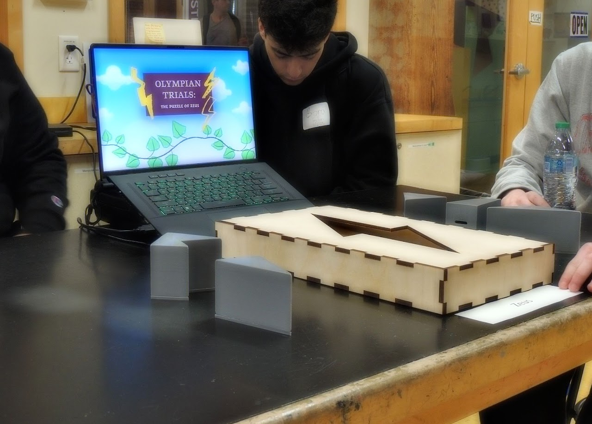
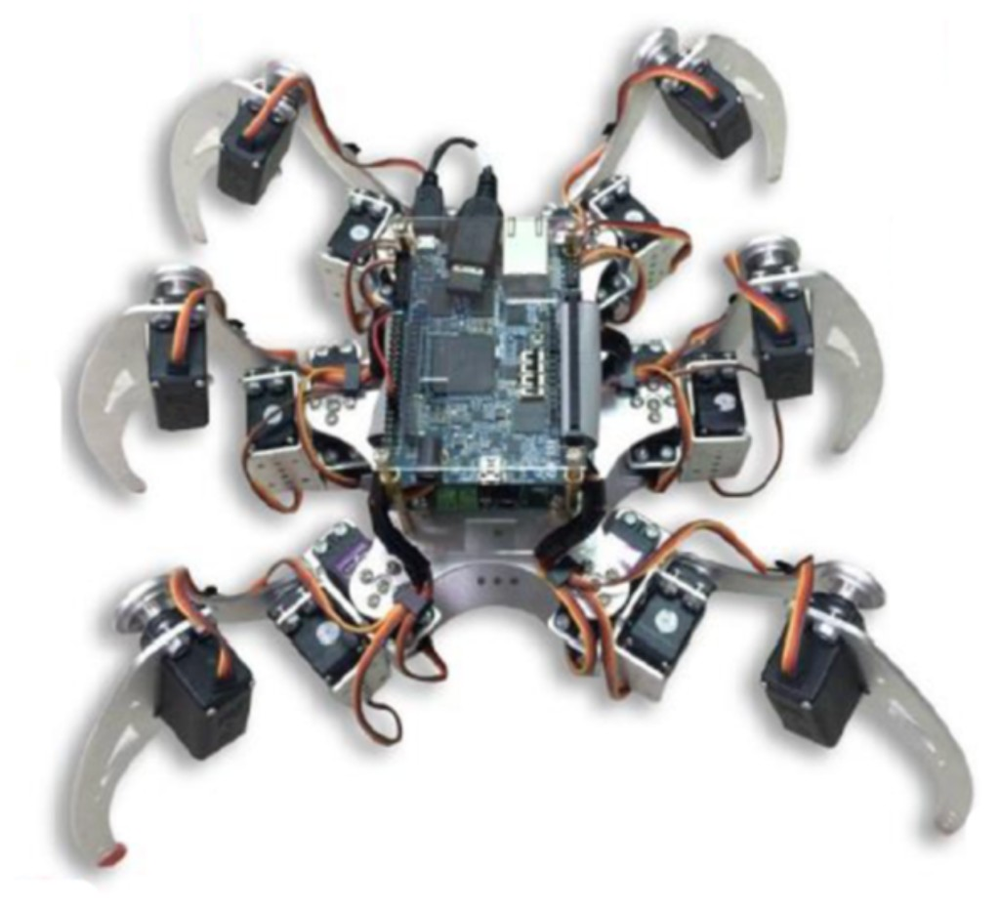
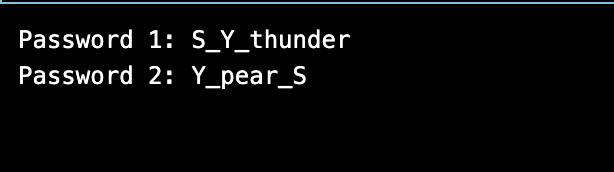
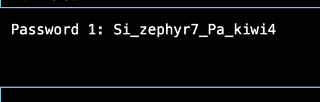
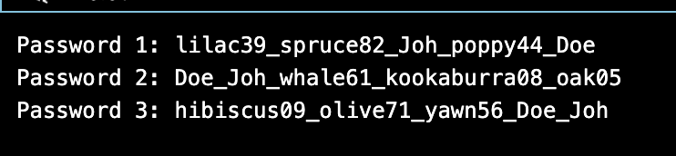

Northeastern Projects
Thunderstruck
Challenge
For Cornerstone 2 we had to design an interactive exhibit for the Boston Children's Museum that would work for a wide age range. The goal was a puzzle where players fit five pieces into Zeus's lightning bolt shape and receive a token when complete—without making it feel like a passive display. We needed reliable detection of piece placement, clear feedback, and a way to make the experience replayable (e.g., beat your best time).
The main technical hurdle was sensing which slots were filled on a wooden grid in a museum environment—durable, low-cost, and robust to lighting and wear. We also had to tie that sensing to an engaging UI (hints, timer, instructions) and keep the whole system simple to maintain.
Solution
We used photoresistors under the grid to detect when pieces were placed in each slot, with an Arduino reading the sensors and running the game logic. A Python-based UI on a separate display connected to the Arduino over serial to show hints, a timer, and instructions in real time. We iterated from a cardboard-and-magnets prototype to a final wood grid design, then brought the exhibit to the museum for testing; players could replay to beat their best time and gave positive feedback. The project is documented on a full project site.

Embedded Design Spider Robot
Challenge
The assignment was to design and build a six-legged hexapod robot that could walk using embedded systems principles. We had to coordinate multiple servo motors for leg movement, design a mechanical frame that was stable and mobile, and implement real-time control so the robot could follow walking patterns reliably.
Challenges included power management and wiring for many servos, writing algorithms for coordinated leg motion, and integrating a central microcontroller with the mechanical design so the robot could support its own weight and move in a controlled way.
Solution
I built a hexapod with articulated leg joints driven by multiple servos, all controlled from a single microcontroller. The firmware implemented walking algorithms for coordinated leg movement and real-time control of gait and direction. I designed a custom frame and leg structure for stability and mobility, integrated power distribution and wiring, and developed the control software for locomotion. The result was a functional hexapod that demonstrated embedded programming, servo control, and mechanical integration in one system.

Password Generator
Challenge
The goal was to build a secure password generation tool that gave users control over length and character sets while guaranteeing cryptographic quality. We needed to use proper random number generation (not weak PRNGs), provide an intuitive interface, and help users understand how strong their passwords were.
Requirements included configurable parameters (length, symbols, numbers, etc.), security analysis or strength evaluation so users could trust the output, and validation that the generated passwords were actually random and suitable for real use.
Solution
I implemented a password generator that uses secure random number generation for creation and includes configurable length and character sets. The UI lets users set options and generate passwords with one action; a strength-evaluation feature gives feedback on the quality of the output. I designed metrics for password strength, validated the randomness and security of the generator, and built a clear interface so the tool was both secure and easy to use for typical password needs.


